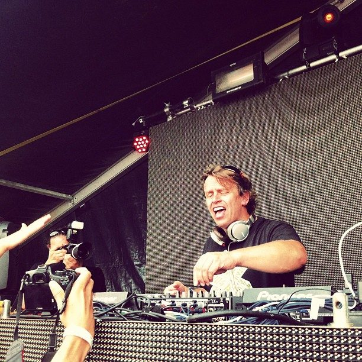

Chicane playing live at Stereosonic



It’s been nearly a decade since we saw live dance act Chicane in the country, but it’s now been revealed that the wait won’t be much longer as mastermind Nick Bracegirdle will be bringing the show back in November for the Stereosonic festival tour. Will Chicane be able live up to the euphoric memories he left behind while on tour with Paul Oakenfold back in 2000? Only time will tell.
Dubbed “the godfather of the Ibiza anthem” in some quarters, Chicane has indeed been responsible for his fair share of Balearic anthems like the unforgettable Saltwater back in 2000, which featured the angelic vocals of Maire Brennan. While things were quiet for a number for years, Chicane returned in 2007 with the Somersault album, while this year releasing an impressive hit in the form of the Poppiholla single.
Chicane tour dates:
Sat 28th November – Stereosonic, Sydney
Sun 29th November – Stereosonic, Perth
Sat 5th December – Stereosonic, Adelaide
Sat 5th December – Stereosonic, Melbourne
Sun 6th December – Stereosonic, Brisbane
Stay tuned for the full Stereosonic lineup announcement this week. While you’re waiting for details to emerge, check out ITM’s Festival Page and take a look back at our ‘Best Of’ Snap featured galleries from the 2008 tour:
> Best Of... Stereosonic - The People
> Best Of... Stereosonic - The Events
> Best Of... Stereosonic - The Artists
*update: ITM has been notified that, contrary to the original listing on Chicane’s website, he will not be performing at Canberra’s Foreshore Festival.